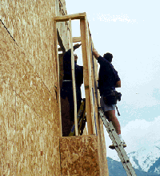

|
Am
I In Danger?
You
risk falling if portable ladders are not safely positioned each
time they are used. While you are on a ladder, it may move and slip
from its supports. You can also lose your balance while getting
on or off an unsteady ladder. Falls from ladders can cause injuries
ranging from sprains to death.
How Do
I Avoid Hazards?
- Position
portable ladders so the side rails extend at least 3 feet above
the landing.
- Secure
side rails at the top to a rigid support and use a grab device when 3 foot extension is not possible.
- Make sure
that the weight on the ladder will not cause it to slip off
its support.
- Before each use inspect ladders for cracked or broken parts
such as rungs, steps, side rails, feet and locking components.
- Do
not apply more weight on the ladder than it is designed to support
- Use only
ladders that comply with OSHA
design
standards.
|

This ladder is being used at the proper angle, and appears to be stable and secure.
Construction
Worker Dies
|